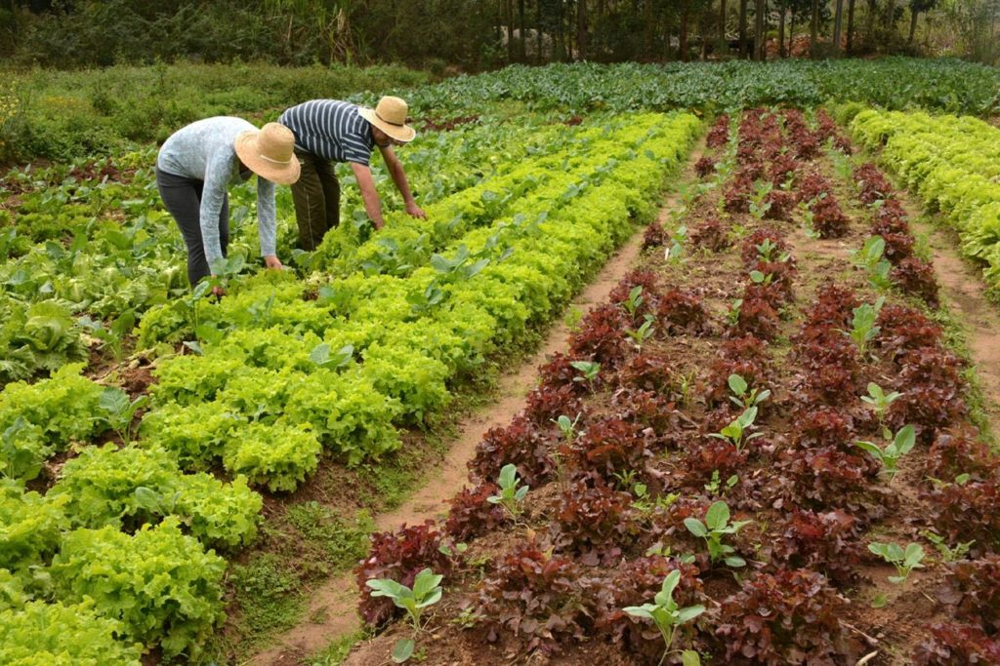
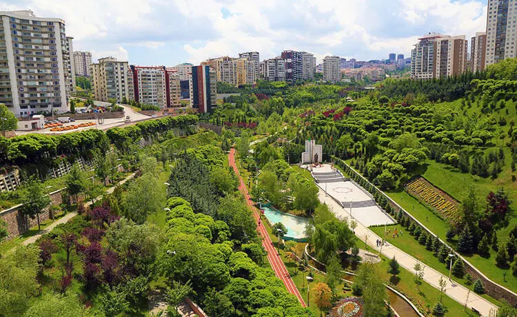
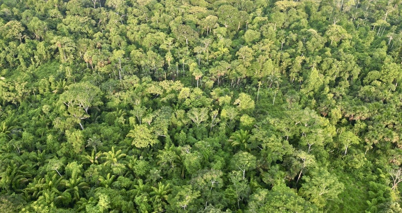
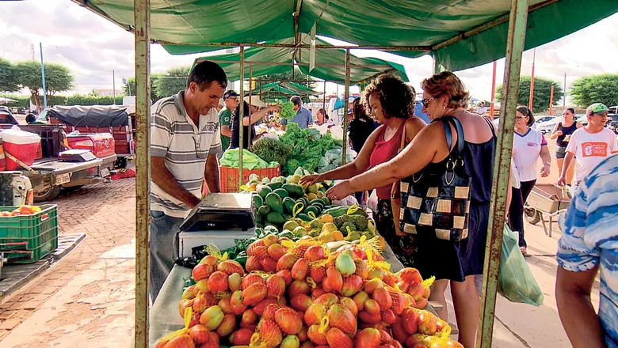

Descubra a conexão mágica e cheia de energia entre o campo e a cidade! 🌍✨
Começar Jornada! 🚀A agricultura moderna usa a tecnologia a favor do planeta. O manejo correto do solo através do plantio direto evita a erosão e mantém a terra fértil por gerações, alimentando as cidades com segurança total.
A sustentabilidade ganha vida quando a cidade se conecta ao campo. Ao escolher alimentos rastreáveis e apoiar feiras locais, a população urbana incentiva as boas práticas ambientais e limpa a nossa atmosfera.
Clique nos títulos abaixo para abrir os relatórios de impacto ambiental do projeto.
Sem as matas de proteção e sem a cobertura correta da palhada, as chuvas fortes lavam a terra rica e soterram as nascentes de água pura. Isso faz com que falte água de qualidade tanto para irrigar as plantas do campo quanto para abastecer as torneiras urbanas.
O uso do fogo destrói os microrganismos bons da terra e lança fumaça tóxica no ar. Essa poluição viaja com o vento direto para os grandes centros urbanos, causando crises respiratórias na população e agravando o efeito estufa mundial.
Quando a cidade descarta comida boa, todo o esforço de adubo, óleo dos tratores e água usados na fazenda vai junto para o lixo. Isso força o campo a trabalhar o dobro e esgota desnecessariamente as reservas naturais que nos mantêm vivos.
Irrigações mal planejadas e o descarte incorreto de resíduos nas fazendas secam os lençóis freáticos. Sem rios saudáveis correndo do interior, as indústrias urbanas param, a energia hidrelétrica cai e o custo de vida nas metrópoles dispara.
Unindo tecnologias limpas no agro (como sensores e satélites) a um consumo sem desperdício na cidade, geramos alimentos saudáveis para sempre, mantemos os animais silvestres protegidos e as florestas paranaenses intactas.
Clique nos botões coloridos para filtrar as fotos do nosso planeta!




Nosso algoritmo inteligente garante que você verá descobertas diferentes a cada clique!
Clique no botão para iniciar a contagem dos 100 fatos exclusivos do Agrinho!